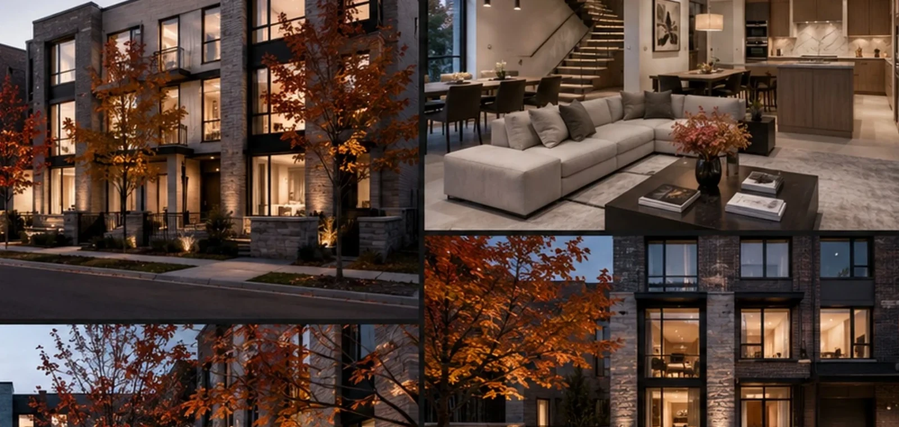
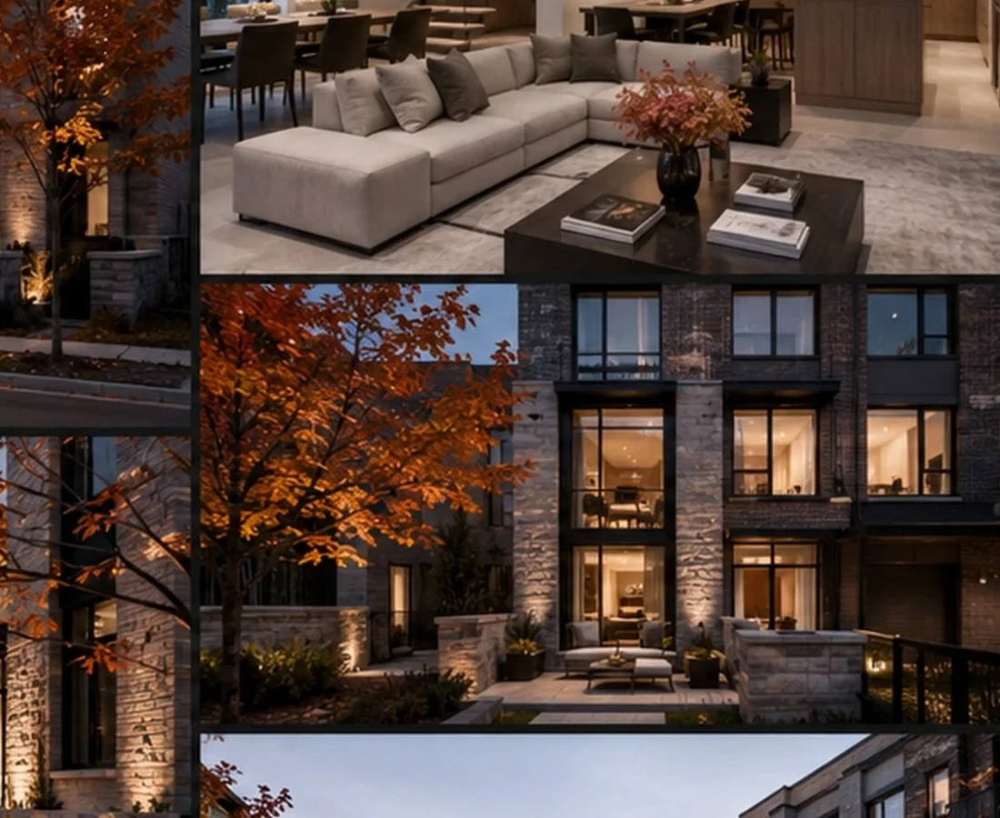
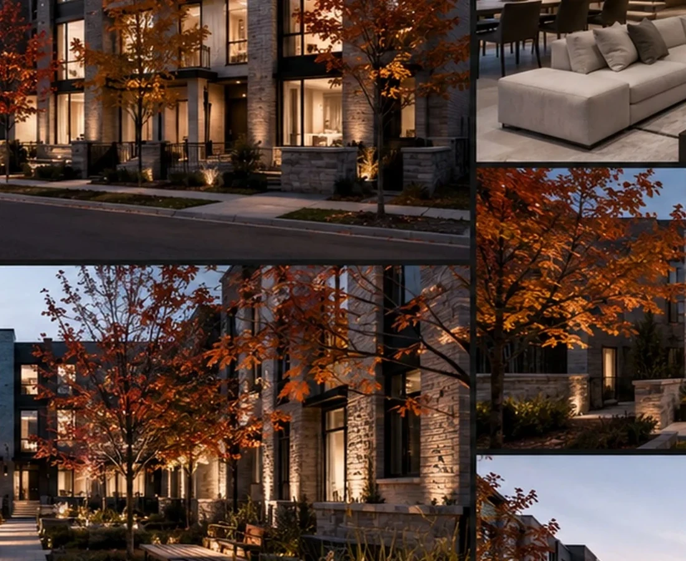

READ THE PROJECT AS A SEQUENCE OF DEVELOPMENT DECISIONS.
The fields below form BADR's standard case-study lens. Project-specific commercial claims should be replaced only when they are supported by the project record.
THE DEVELOPMENT QUESTION
How can a repeated townhouse product build community identity without becoming monotonous?
THE GOVERNING IDEA
Repetition with variation.
THE DESIGN RESPONSE
A consistent architectural family allows individual homes to remain recognisable within a coherent street edge.
THE SIGNATURE
Human-scale streets and a warm residential rhythm.
WHY IT MATTERS
The value is in turning repetition into neighbourhood character instead of visual sameness.
Design Direction
A project identity shaped by place, typology and experience.
The design works through repetition with variation: a consistent architectural family that still allows each home to feel identifiable and personal.
Project narrative is based on the supplied BADR portfolio record and visible design material.



A New Development Opportunity
Your Site Deserves a Development Strategy Before It Becomes a Drawing Package.